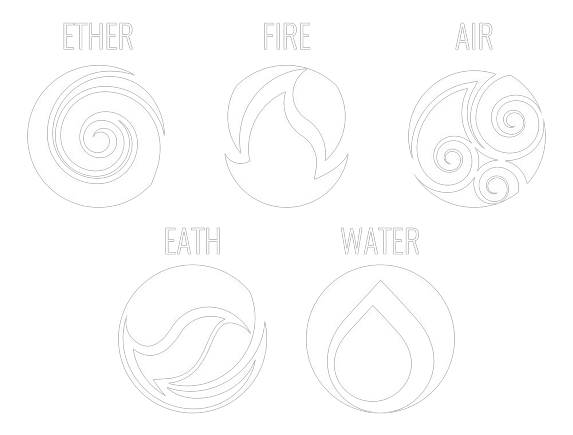

PRIMEIRAS IMPRESSÕES. . .
Cristais são poderosos aliados de magos, bruxos e praticantes que desejam potencializar a energia/força de seus feitiços, encantamentos, ou até mesmo gerar proteção aos que utilizam-se deles. Historicamente, são considerados elementos poderosos pois, mesmo com a ação do tempo se mantem firmes e constante. Dessa forma, percebe-se que eles são bastante úteis e quando usufruídos da forma correta podem causar efeitos estrondosos. Para aprender a manejá-los da forma correta, continue lendo!
ENERGIA DOS CRISTAIS
É importante saber que os cristais funcionam conforme a energia dos elementos naturais que eles transmitem. Existem 5 tipos de energias principais, são elas: fogo, ar, terra e água as demais derivam dessas primárias. Cada elemento ajuda num âmbito da vida cotidiana:
- Terra (Material);
- Ar (Pscicológico);
- Água (Sentimental);
- Fogo (Espiritual).
A energia manipulada fará os efeitos nas áreas correspondentes ao elemento(s) que está sendo utilizado(s).
USOS COMUNS
Os usos mais comuns dos cristais são para proteção, bem estar (cura), harmonia, paixão/atração, prosperidade e espiritualidade. Iremos apresentar alguns dos cristais mais usados para essas fins e o respectivo elemento que ele manifesta. Eles podem ser ultilizados como colares, pingentes, pedras avulsas, decoração
LIMPEZA
Cristais como o Quartzo Branco, a Ametista e a Turmalina Negra são cristais de limpeza de energias negativas. Eles atuam na harmonia e no bem estar. Seu elemento representativo é o fogo. Pedras como essas podem ajudar a aguçar a intuição, diminuir ansiedade e mal olhado.
ATRAÇÃO
Pedras como a Magnetita, Quartzo Rosa e Jaspe Vermelho são exemplos de rochas com itenso poder de atração e paixão envolvente. Para atingir seus meio elas ultilizam: a alto estima de quem as usa almentando-a, a prosperidade (sorte no amor azar no jogo ;) ) e a sexualidade do envolvido. O elemento que o representa é a água, por isso é interessante utilizar essas pedrao ao longo do banho.
.jpg)
.jpg)
.jpg)
SAÚDE E HARMONIA
Materias como o Quartzo Verde, a Zhabanita e a Pirita são cristais que visão estabelecer saúde e harmonia no ambiente. Para tentar se acalmar em situações ansiosas, a sanar pequenas viroses, curar machucados e arranhões, entre outros... Seu elemento representativo é a terra. Todavia, para serem ativados eles precisam estar energizados sob o corpo da pessoa, de preferencia no local ferido.
OBS!: Ainda não foram descobertas todas as propriedades desse tipo de cristal! Existem estudos antigos não comprovados que dizem que eles podem ter poder de ressuscitação.
.jpg)
.jpg)
.jpg)
PROSPERIDADE
Rochas como o Olho de Tigre, Lalita e Cobroetita ajudam na prosperidade. Elas são utilizadas principalmente para àrea financeira, amorosa, jogos de sorte, no amor, etc. O seu principal poder é a potencialização e seu elemento principal é o ar. É interessante deixar uma pequena pedra dessa categoria dentro da carteira para atrair boas finanças.
.jpg)
.jpg)
.jpg)
CRISTAIS DA LUA
Na natureza existem pedras raras, os cristais da lua estão entre elas. Eles tem uma taxa de raridade de 1,23%. Para a bruxaria eles servem para desbloquearem locais do inconsiente humano e atuam sobre o pscicológico do ser. Por ser difícilmente encontrado e caro são mais encontrados em laboratórios e clínicas de pesquisa psciocológica. Mas, caso você tive-lo ele possui uma combinação quase equivalente de todos os elementos, sendo útil na maioria das situações cotidianas.
OBS!: A categoria não recebe esse nome por vir da Lua, mas por revelar um "mundo interno" (o inconsciente) que nos orbita sempre, no entanto raramente conseguimos vê-lo. A pedra atua como uma iluminação dessa Lua interna.
.jpg)
.jpg)
.jpg)